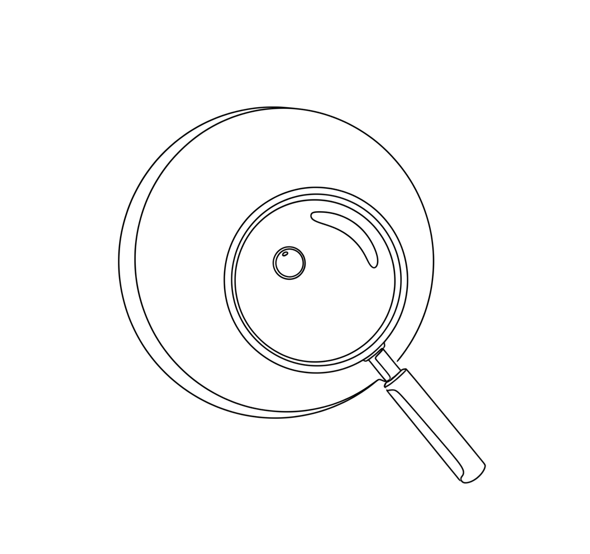

Auditing UniFi with AI
A copy-paste prompt for pointing an AI agent at a UniFi controller's API and getting a prioritized network audit back.

UniFi's controller exposes a proper API, and Ubiquiti publishes an onboarding doc written specifically for AI agents. Between the two, you can hand an agent read access and a task instead of clicking through every settings tab yourself. The prompt below is the one I use to get a security/performance/topology pass on a site.
Getting an API key
- Open a web browser and log into your Local Portal by typing your UniFi gateway's IP address (e.g.
192.168.1.1). - Go to Settings → Control Plane → Integrations.
- Enter a descriptive name for your API key in the input box (e.g. "Home Assistant").
- Adjust the key duration if prompted, then select Create API Key.
- Copy the generated key and save it safely before closing the window.
Drop that key in a local key.txt next to wherever the agent runs, point it at the controller, and give it this:
You are an expert enterprise network engineer specializing in Ubiquiti UniFi environments.
I am providing you with a API key in "key.txt" to my UniFi controller configuration access https://192.168.1.1
Read https://developer.ui.com/network/v10.4.57/ai-gettingstarted.md and follow the instructions to help the user onboard.
Please perform a comprehensive audit and output your findings. Focus on:
- **Security:** Look for missing firewall rules, unisolated guest/IoT networks, or weak encryption.
- **Performance:** Check for sub-optimal channel widths, overlapping channels, or high-power 2.4GHz configurations.
- **Topology:** Check for data bottlenecks or poorly configured uplink priorities.
Structure your response into:
1. **Critical Vulnerabilities / Immediate Actions** (High priority)
2. **Performance Enhancements** (Medium priority)
3. **General Best Practices / Clean-up** (Low priority)Notes on adapting it
- Swap
192.168.1.1for your controller's actual address, and thev10.4.57in the getting-started doc URL for whatever version you're running. - A read-only API key is enough for the audit itself — only widen scope if you also want the agent to apply fixes.
- The linked getting-started doc is what teaches the agent the actual endpoint shapes, so don't skip having it fetch that first.